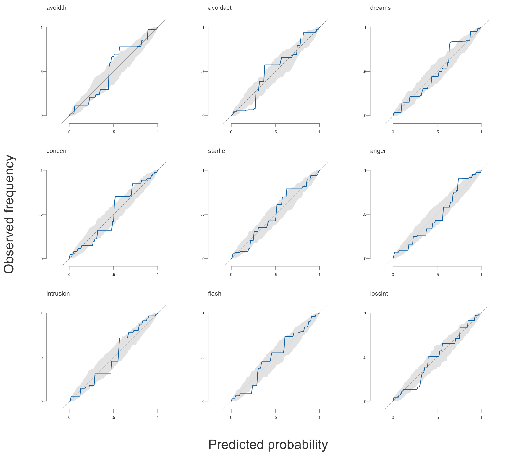
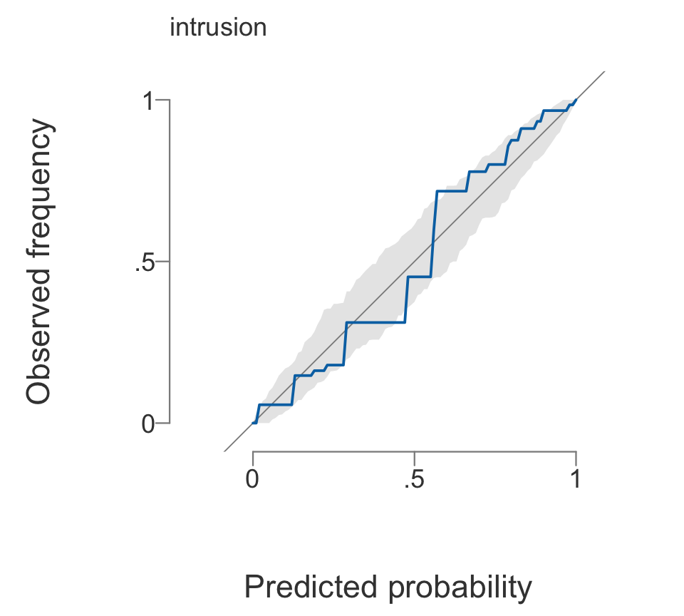

library(bgms)
fit = bgm(Wenchuan, iter = 1e4, warmup = 5e3, seed = 123)Checking Tools
Two post-fit checks on a model you have already estimated. verdicts() reads the edge evidence as a three-way classification and flags the verdicts a longer run could change; calibration_check() asks whether the model’s conditional predictions are any good.
Neither refits the model. Executed examples on this page use a bgm() fit of the Wenchuan data, run in advance:
verdicts
Reads each edge (or difference) indicator’s inclusion Bayes factor as a three-way verdict, evidence of presence, undecided, or evidence of absence, and flags the verdicts that a rerun of the sampler could change.
Usage
verdicts(bgms_object, evidence_threshold = 10, ...)The result has a print() method:
print(x, digits = 3, max_rows = 10L, ...)Arguments
| Argument | Description |
|---|---|
bgms_object |
A fitted bgms object from bgm() with edge_selection = TRUE, or a bgmCompare object from bgmCompare() with difference_selection = TRUE. Without selection there is no indicator and no inclusion Bayes factor to read, and the call is an error. |
evidence_threshold |
Numeric greater than 1. The inclusion Bayes factor above which an edge is called present; its reciprocal is the threshold below which an edge is called absent. Default: 10. |
... |
Passed to methods. |
x |
A bgms_verdicts object (print()). |
digits |
Integer. Digits in the printed table. Default: 3. |
max_rows |
Integer. Maximum rows printed; the rest are counted. Default: 10. |
Value
A data frame of class "bgms_verdicts", one row per indicator, in the order of the fit’s raw indicator draws. print() returns x invisibly.
| Column | Contents |
|---|---|
parameter |
Indicator name, as in summary(fit)$indicator. |
pip |
Rao-Blackwellized posterior inclusion probability. |
bf, log_bf |
Inclusion Bayes factor and its natural logarithm, from extract_inclusion_bf(). log_bf stays finite where bf saturates at 0 or Inf. |
verdict |
Factor with levels "presence", "undecided", "absence", and NA for indicators that were never updated (main-effect differences under main_difference_selection = FALSE). |
se_two_state, se_rb |
Standard errors of the logit inclusion probability, from the Jeffreys-smoothed two-state model of the indicator chain and from the Rao-Blackwellized draws. se_rb is NA where the Rao-Blackwellized draws are constant to double precision. |
distance_two_state, distance_rb |
Distance from log_bf to the nearer verdict boundary, in units of each standard error. |
fragile |
TRUE when either distance is below 2. |
The evidence threshold is attached as the evidence_threshold attribute, and whether the fragility flag’s operating point covers this kind of indicator as flag_validated. A bgmCompare fit additionally carries difference_fit, and, under main_difference_selection = FALSE, unselected_main, marking the main-effect rows the print leaves out of its counts.
Details
What “fragile” means. An edge is fragile when a verdict boundary lies within two standard errors of its estimated evidence, close enough that the reported verdict could rest on Monte Carlo noise rather than on the data. A fragile verdict is not a wrong verdict; it is a verdict the run is too short to settle, and the remedy is more sampling iterations.
Two kinds of standard error enter that rule, because neither catches every error on its own. The two-state standard error models the binary indicator chain as a first-order two-state Markov chain with Jeffreys-smoothed transition rates, which keeps it defined when the indicator never flips. The Rao-Blackwellized standard error is the Monte Carlo standard error of the one-step inclusion draws, carried to the logit scale by the delta method. The flag fires when either one places a boundary within two standard errors.
The operating point behind that rule comes from a calibration study that graded 37,010 edge verdicts against known truth, across ordinal, binary, and Gaussian graphical models. Every one of the 66 verdict errors in that study sat within 0.58 of a threshold on the natural log Bayes factor scale. Taken alone the two-state error caught 74% of them and the Rao-Blackwellized error 94%; flagging on either caught all 66, at the cost of also flagging 3.0% of correct verdicts. That performance carried across the three model types, so the flag applies to Gaussian graphical models as it does to ordinal and binary ones.
Every fit in that study was of a single network, so the operating point covers the edge indicators of bgm(). On the difference indicators of bgmCompare() the flag still marks verdicts sitting near a boundary, but no study has measured what share of difference-verdict errors it catches or how many correct verdicts it flags along the way. The print method says so, and the returned object carries flag_validated = FALSE.
The threshold is a reporting convention, not a property of the data. Moving it moves the boundaries, and with them which edges sit close enough to one to be fragile. For whether a verdict depends on the prior rather than on the run length, see prior_sensitivity_check().
Examples
verdicts(fit)Edge verdicts at an inclusion Bayes factor of 10 (and 0.1 for absence):
presence: log BF > 2.30; absence: log BF < -2.30
presence 35 | undecided 39 | absence 62 (136 indicators)
parameter pip log_bf verdict fragile
intrusion-dreams 1.000 274.759 presence FALSE
intrusion-flash 1.000 12.112 presence FALSE
intrusion-upset 0.664 0.681 undecided FALSE
intrusion-physior 0.217 -1.284 undecided FALSE
intrusion-avoidth 0.034 -3.355 absence FALSE
intrusion-avoidact 0.029 -3.494 absence FALSE
intrusion-amnesia 0.038 -3.243 absence FALSE
intrusion-lossint 0.044 -3.077 absence FALSE
intrusion-distant 0.031 -3.452 absence FALSE
intrusion-numb 0.058 -2.784 absence FALSE
... (126 more rows)
7 verdicts are Monte-Carlo fragile: a verdict boundary lies within two standard
errors of the evidence, so the verdict could change on a rerun. Consider a
longer run.The counts are the headline. The log_bf column is the natural logarithm of the Bayes factor, and the thresholds reappear on it as \(\pm\log 10 \approx \pm 2.30\).
The fragile rows, with their distance to the nearer boundary in units of each standard error:
v = verdicts(fit)
v[v$fragile, c("parameter", "pip", "log_bf", "verdict",
"distance_two_state", "distance_rb")] parameter pip log_bf verdict distance_two_state
16 intrusion-startle 0.08836410 -2.333775 absence 0.8201162
25 dreams-numb 0.09445232 -2.260445 undecided 1.3005676
45 flash-startle 0.92280820 2.481128 presence 1.9028972
48 upset-avoidact 0.08715306 -2.348902 absence 1.2239718
79 avoidth-concen 0.08558879 -2.368726 absence 1.7876387
80 avoidth-hyper 0.09438922 -2.261183 undecided 1.0420824
91 avoidact-startle 0.08889276 -2.327230 absence 0.6432962
distance_rb
16 0.7758760
25 1.4541477
45 1.7375245
48 1.2352697
79 1.9213931
80 0.8580714
91 0.5926128A stricter reading of the evidence moves the boundaries:
table(verdicts(fit, evidence_threshold = 30)$verdict)
presence undecided absence
29 83 24 For the same table read as a worked analysis, see From estimation to evidence.
calibration_check
Reliability diagrams of the model’s conditional predictions, one per variable, with the consistency band a calibrated model would wander inside.
Usage
calibration_check(
bgms_object,
newdata = NULL,
nrep = 200,
probs = c(0.025, 0.975),
grid_size = 101,
seed = NULL,
ndraws = 500,
...
)The bgmCompare method takes one further argument:
calibration_check(bgms_object, ..., group = NULL)The result has print() and plot() methods:
print(x, digits = 3, max_rows = 10L, ...)
plot(x, variables = NULL, max_panels = 9L, page = 1L, ...)Arguments
| Argument | Description |
|---|---|
bgms_object |
A fitted bgms object from bgm() or bgmCompare object from bgmCompare(). Edge selection is not required. |
newdata |
Optional data to evaluate the predictions on, in the layout the fitting function was given. Defaults to the data the model was fitted to. For a bgmCompare fit the rows must be the fitted cases in the order the data were given, because each case’s group is read from the fit. |
nrep |
Number of resampled datasets behind the consistency band. Default: 200. |
probs |
Numeric of length two; the band’s quantiles. Default: c(0.025, 0.975). |
grid_size |
Number of points the curves are read off on. Default: 101. |
seed |
Optional integer seed for the band resampling. Pass one to make the check reproducible; the band is resampled, so an unseeded rerun gives slightly different numbers. |
ndraws |
Posterior draws in the predictive mixture behind a continuous variable’s panel. Ignored when every variable is discrete, and reported back as NA in that case. Default: 500. |
group |
bgmCompare only. Which groups to check. Default NULL, meaning all of them. |
... |
Passed to methods. |
x |
A bgms_calibration object (print() and plot()). |
digits, max_rows |
print(): digits in the table, and how many variables to name before the rest are counted. Defaults 3 and 10. |
variables |
plot(): optional character vector selecting which variables to draw. Defaults to all, worst departure first. |
max_panels |
plot(): how many panels are drawn at once; a fit with more variables is drawn a page at a time. Default: 9. |
page |
plot(): which page of max_panels panels to draw. Default: 1. |
Value
An object of class "bgms_calibration", a list with:
| Component | Contents |
|---|---|
curves |
Data frame with one row per variable and grid point: variable, the panel kind ("pav" or "pit"), grid, the fitted curve, and the band bounds lower and upper. |
summary |
One row per variable, worst first: variable, kind, mean_dev and max_dev, the mean and maximum absolute distance of the curve from the diagonal, and share_outside_band, the proportion of grid points at which the curve lies outside its band. |
nrep, probs, grid, ndraws |
The settings the check ran under. |
For a bgmCompare() fit both tables carry an extra group column and the object a groups element. print() and plot() return x invisibly.
Details
Discrete variables are checked against the categories they fall in. For every case and every category threshold the model issues a cumulative probability and the data record the outcome; isotonic regression (pool-adjacent-violators) estimates the observed frequency as a monotone function of the predicted one, and a calibrated variable tracks the diagonal. The band resamples each case’s category from its own predicted distribution and refits the curve. It has to be built that way: the cumulative threshold events of one case are nested, so resampling the events independently would understate the band and make ordinary sampling variation look like miscalibration. The predictions are the posterior-mean ones.
Continuous variables have a density rather than a distribution over categories, and are checked through the probability integral transform \(u_{ij} = F_j(y_{ij} \mid y_{i,-j})\). The panel is the empirical distribution function of the \(u\)’s against the uniform diagonal. \(F_j\) is the predictive mixture over ndraws posterior draws, so parameter uncertainty sits inside the distribution the observation is transformed by. The two panel kinds therefore differ in what they condition on: the isotonic one on posterior-mean probabilities, this one on the full predictive distribution. The band is the simultaneous envelope of the empirical distribution functions of \(n\) independent uniforms, and is not resampled from the model because it does not have to be. Whatever the conditional density was, a value drawn from it transforms to an exact \(\text{Uniform}(0, 1)\), so the null is known and one band serves every continuous variable in the fit.
Both panels live on the unit square with the diagonal as the calibrated reference, so a mixed fit produces one figure and one summary table, with the kind column recording which construction produced each row.
Group comparisons. On a bgmCompare() fit the check runs per group: a group’s cases are the ones its own parameters predict, so pooling them would let a variable predicted too high in one group cancel against the other, exactly as pooling variables would. Every variable is discrete there, so every panel is isotonic, and ndraws has no effect.
In-sample and out-of-sample. Evaluated on the fitted data the check is in-sample, and the band is the reference a model that is calibrated by construction produces on the same data. In-sample, each observation has also helped estimate the parameters it is judged against, which pulls the predictions slightly toward the data and makes the check conservative. Supplying held-out newdata removes that advantage and makes the check strictly harder to pass.
What a pass does not buy you. Calibrated conditional predictions do not imply that the model reproduces the joint distribution: a model can predict each variable well from the others and still understate how strongly they depend on one another. That second question is answered by a display built on simulate(), not by this check.
Examples
The check reads the existing draws and never refits, so it costs seconds rather than another fit:
check = calibration_check(fit, seed = 123)
checkCalibration of the conditional predictions, 95% consistency band from 200 resamples:
variable kind mean_dev max_dev share_outside_band
avoidth pav 0.073 0.208 0.287
avoidact pav 0.064 0.193 0.287
dreams pav 0.049 0.183 0.139
concen pav 0.060 0.181 0.277
startle pav 0.045 0.167 0.129
anger pav 0.052 0.164 0.168
intrusion pav 0.056 0.159 0.109
flash pav 0.046 0.146 0.089
lossint pav 0.039 0.140 0.089
numb pav 0.042 0.130 0.069
... (7 more variables)
A calibrated variable tracks the diagonal and stays inside its band;
'share_outside_band' is the proportion of the curve that does not, on a
0 to 1 scale (0.3 is 30% of the curve, not 0.3%).share_outside_band is a proportion on a 0 to 1 scale, so 0.3 means that 30% of the curve lies outside its band. Read the table as a ranking of where to look first, not as a test with a pass mark: the band is a consistency reference for a model calibrated by construction, and even a well-calibrated variable crosses it here and there.
plot() draws the reliability diagrams, worst departure first:
plot(check)Showing page 1 of 2 (17 variables, worst departure first). Draw the rest with page = 2, or select panels with variables = .
One variable at a time, by name:
plot(check, variables = "intrusion")
intrusion panel on its own.
See also
bgm(), bgmCompare(), prior_sensitivity_check(), extract_inclusion_bf(), plot() for the network the verdicts encode, Edge Selection, and From estimation to evidence.